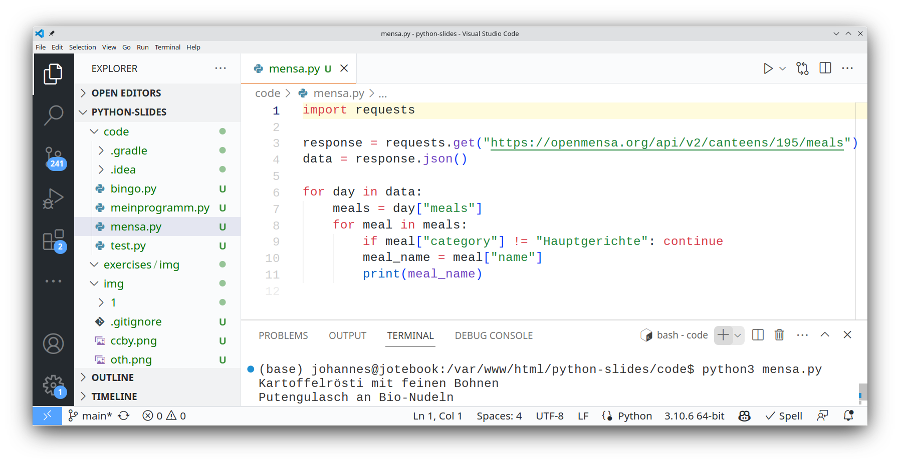
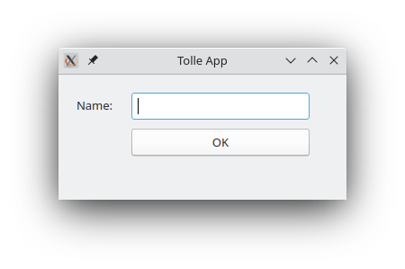
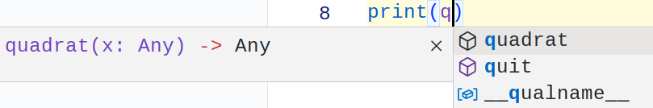
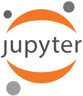
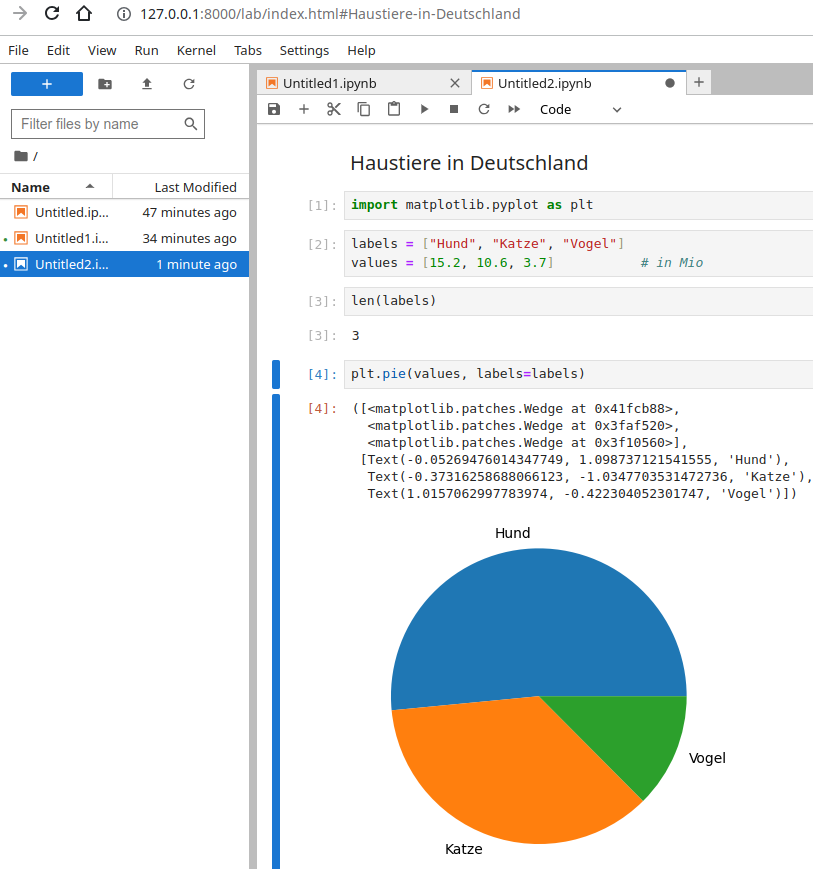
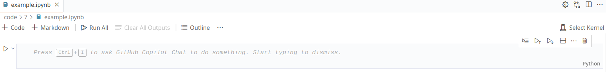
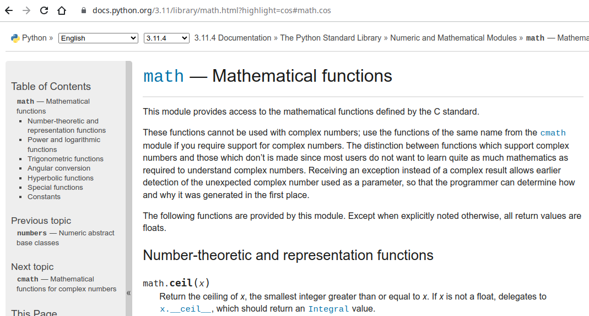

1, 2
Prof. Dr.-Ing. Johannes Schildgen
johannes.schildgen@oth-regensburg.de
Programmieren 2 (Python)
Kapitel 1: Loslegen mit Python


Vorlesung / Übung
Seminaristischer Unterricht
- Start: 16.03.2026
- Mo 13:45 Uhr und Mi 15:30 Uhr in K221
- Livestream und Aufzeichnung auf YouTube
- Vorlesung mit integrierten Übungen
Vorlesung / Übung
Vorlesung
- Start: 06.10.2026
- Di 14:00 Uhr in K003
- Livestream und Aufzeichnung auf YouTube
Übung
- Start: 07.10.2026
- Mi 11:45 Uhr in K221
- Jede Woche ein Übungsblatt (12 Stück)
- Abgabe-Deadline: Mi 11:00
Übung
- In der Vorlesung erscheinen Übungsaufgaben
- Sie lösen die Aufgaben am CIP-Pool-Rechner
oder eigenem Laptop - Bei Fragen einfach fragen
- Leichte Aufgaben zum Einstieg ins Thema
+ komplexe Aufgaben - Countdown zum Lösen in der Präsenzveranstaltung, die restlichen Aufgaben lösen Sie zu Hause
- Jede Woche: Abgabe im ELO zum Punktesammeln
- Abgabe-Deadline: darauffolgender Montag 10:00 Uhr
Klausur
- Zulassungsvorraussetzung:
mind. 100 Punkte in der Übung
(es gibt 12 Abgaben mit
jeweils mind. 10 Punkten) - Schriftliche Klausur
(vermutlich mit PC-Nutzung) - 90 Minuten Zeit
- Hilfsmittel: Handschriftlich
doppelseitig beschriebenes DIN-A4-Blatt
Literatur
1 1
- J. Schildgen
Python für KI- und Datenprojekte - J. Schildgen
Sprachkurs Python
Das Programmier-Hörbuch
Aufbau der Vorlesung
- Einführung und Loslegen
- Visual Studio Code, Jupyter Notebook

Aufbau der Vorlesung
- Einführung und Loslegen
- Visual Studio Code, Jupyter Notebook
- Grundlagen der Sprache Python
- Datentypen, if/while/for/...
- Listen, Tupel, Mengen, Dictionaries
Aufbau der Vorlesung
- Einführung und Loslegen
- Visual Studio Code, Jupyter Notebook
- Grundlagen der Sprache Python
- Datentypen, if/while/for/...
- Listen, Tupel, Mengen, Dictionaries
- Mit Dateien arbeiten, Exception-Handling
Aufbau der Vorlesung
- Einführung und Loslegen
- Visual Studio Code, Jupyter Notebook
- Grundlagen der Sprache Python
- Datentypen, if/while/for/...
- Listen, Tupel, Mengen, Dictionaries
- Mit Dateien arbeiten, Exception-Handling
- Objekt-orientierte Programmierung
- Klassen, Interfaces, Objekte
Aufbau der Vorlesung
- Einführung und Loslegen
- Visual Studio Code, Jupyter Notebook
- Grundlagen der Sprache Python
- Datentypen, if/while/for/...
- Listen, Tupel, Mengen, Dictionaries
- Mit Dateien arbeiten, Exception-Handling
- Objekt-orientierte Programmierung
- Klassen, Interfaces, Objekte
- GUI-Programmierung

Aufbau der Vorlesung
- Einführung und Loslegen
- Visual Studio Code, Jupyter Notebook
- Grundlagen der Sprache Python
- Datentypen, if/while/for/...
- Listen, Tupel, Mengen, Dictionaries
- Mit Dateien arbeiten, Exception-Handling
- Objekt-orientierte Programmierung
- Klassen, Interfaces, Objekte
- GUI-Programmierung
- Datenanalysen, Visualisierungen und KI
Warum Python?
1.2
- Einfache Syntax
- Plattformunabhängig
- Kostenlos und Open Source
- Vielseitig einsetzbar:
- Konsolenprogramme
- Grafische Benutzeroberflächen
- Web-Anwendungen
- Datenanalyse
- KI / Machine Learning
- Scripting und Automatisierung
- ...
Python-Interpreter
2-4 2.3, 2.4
Python-Programme werden von einem Interpreter ausgeführt.
Interaktiver Interpreter
$ python
Python 3.14.3 (main, Feb 18 2026, 14:35:05) on linux
Type "help", "copyright", "credits" or "license" for more information.
>>> 5+3
8Script-Interpreter
$ python meinprogramm.pyBeispiel-Programm
2.4
meinprogramm.py
Starten:
$ python meinprogramm.pyAusgabe:
Hallo!
8IDE
2.5
Integrated Development Enviroments
PyCharm, Thonny, Visual Studio Code, ...
- Kann viiiiel mehr als ein Texteditor
- Autovervollständigung
- Code-Generierung
- Versionsverwaltung
- Zeigt Warnungen und Fehler an
- Ausführung und Debugging des Programms
- ...
Visual Studio Code
2.5
Visual Studio Code
Nützliche Funktionen:

- Autovervollständigung beim Tippen
- Rechtsklick → Format Document
- Sauberes umbenennen:
Rechtsklick auf etwas → Rename Symbol - Oben rechts: Play Button zum direkten Ausführen ▷
- Eingebauter Debugger, Git-Integration, Unterstützung für Jupyter Notebooks, ...
Übung 1.1
Machen Sie sich mit Python und Visual Studio Code vertraut:
- Installieren Sie Visual Studio Code und die Python-Erweiterung
(Tipp: Einfach eine .py-Datei anlegen, dann fragt VS Code nach der Installation der Python-Erweiterung) - Öffnen Sie ein Terminal in Visual Studio Code (oben im Menü) und starten Sie die interaktive Python-Konsole mittels
python, rechnen Sie etwas aus und spielen Sie mit Variablen. - Schreiben Sie simplen Programmcode, um etwas zu berechnen in eine
uebung_1_1.pyund führen Sie sie aus. - Nutzen Sie das Umbenennen-Feature in VS-Code, um eine Variable an allen Stellen umzubenennen (Rechtsklick → Rename Symbol).
Jupyter
24 2.6

Jupyter Notebook ist eine open-source Webanwendung, um interaktive wissenschaftliche Datenauswertungen und Berechnungen durchzuführen.
- Eingabe- und Ausgabezellen
- Code
- Text / Markdown
- Diagramme
- ...
Strg+Enter führt aktuelle Zelle aus.
.ipynb-Dateien lassen sich mit Jupyter Notebook, Jupyter Lite und auch mit Visual Studio Code öffnen.

Jupyter Notebooks in VS Code

- Select Kernel (oben rechts): Lautzeitumgebung (z. B. Python 3.10.12)
- Esc/Enter: Wechsel in den Kommandomodus / Editierenmodus
- A / B im Kommandomodus (+Code) fügt Code-Block ober-/unterhalb ein
- +Markdown fügt Text-Block hinzu:
# Überschrift,**fett**,*kursiv*,- Liste, ... - D D im Kommandomodus: aktuellen Block löschen
- Strg+Enter: Aktuelle Zelle ausführen
- Shift+Enter: Aktuelle Zelle ausführen und weiter zur nächsten Zelle
Übung 1.2
Jetzt geht's um Jupyter-Notebooks in Visual Studio Code:
- Installieren Sie die Python-Erweiterung für Visual Studio Code
(Tipp: Einfach eine .ipynb-Datei anlegen, dann fragt VS Code nach der Installation der Erweiterung) - Erstellen Sie eine Markdown-Zelle mit coolem Inhalt (Überschriften, Text, ...)
- Erstellen Sie eine Code-Zelle, in der Sie Berechnungen durchführen und mit
printErgebnisse und Text ausgeben. - Erstellen Sie eine weitere Code-Zelle, in der Sie ebenfalls eine Berechnung ausführen, nun jedoch ohne
printdas Ergebnis ausgeben, indem Sie einfach einen Variablennamen in die letzte Zeile der Codezelle schreiben.
Python-Dokumentation
Viele Beispiele, Beschreibungen von Bibliotheken, Funktionen, uvm.

Kapitelzusammenfassung
- Die Programmiersprache Python
- Visual Studio Code
- Jupyter-Notebooks
- Python-Dokumentation